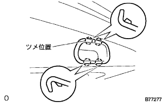
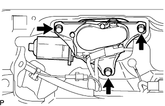
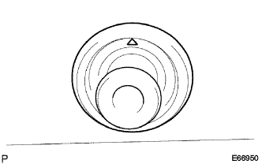
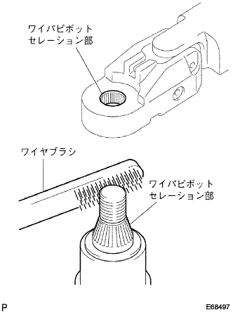
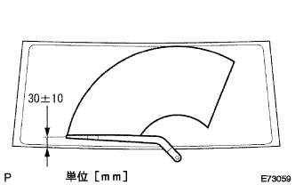
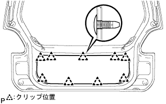
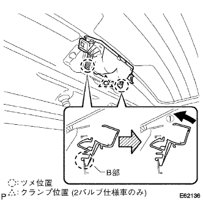
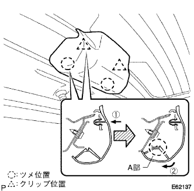

Back door assembly |
| 1. Installation of door pull handle |
|  |
Make the claws and attach the door -pull handle.
| 2. Television camera ASSY installation (with back guide monitor system) |
Attach the television camera wire cover to the television camera ASSY with two screws.
Attach the television camera ASSY with two screws.
Connect the connector.
| 3. Television camera ASSY W/television camera wire cover installation (with back guide monitor system) |
| 4. Backdoor outside handle ASSY installation |
Assemble the door electrical key switch to the cross -door outside handle with a screw.
Attach the backdoor outside handle ASSY with a screw.
Connect the connector.
| 5. Backdoor lock ASSY installation |
Attach the backdoor lock ASSY with three bolts.
Connect the connector.
| 6. Rearaway piper ASSY installation |
|  |
With three bolts, attach the rear wai podota ASSY.
Connect the connector.
| 7. Installation |
|  |
Attach the rearwai pamota glocker mark upwards.
| 8. Rearaway pipear arm Assisted |
|  |
Clean the Rear Wipibot Serr Me with a wire brush.
Clean the rear wiper arm cells with a circle or crossing.(When re -assembling)
|  |
Rearaway Pamota Assessy is stopped at a automatic stop position, and the rear wiperem ASSY is attached with the nut as shown in the figure.
The rear waipa is activated while applying water or washer solution on the glass to confirm that the blade is wavy and does not interfere with the body.
| 9. Rearaway piper arm head cap installation |
| 10. Attach the backdoor trim board |
|  |
Found nine clips and attach the Batsukudo Atlim board.
| 11. Back window glass channel RH installation |
Apply the primer to the body mounting surface.
Combine the two clips and attach the back window glass channel RH.
| 12. Back window glass channel LH installation |
Attach in the same way as the back window glass channel RH.
| 13. Center Top Lamp ASSY installation |
Connect the connector to the center top lamp ASSY.
Centaster top lamps are inserted into the center top lamp bracket of two places of claws of ASSY B.
|  |
Rotate the center top lamp ASSY in the direction of ① and attach the center top lamp ASSY to the center top lamp bracket.
In the clamp, attach the harness of the center top lamp ASSY to the center top lamp bracket.
| 14. Attachment top lamp cover installation |
|  |
Press the center top lamp cover in the direction of ① and attach two clips on the clip.
Press the center top lamp cover in the direction of ②, and attach the center top lamp cover in two places in parts A.